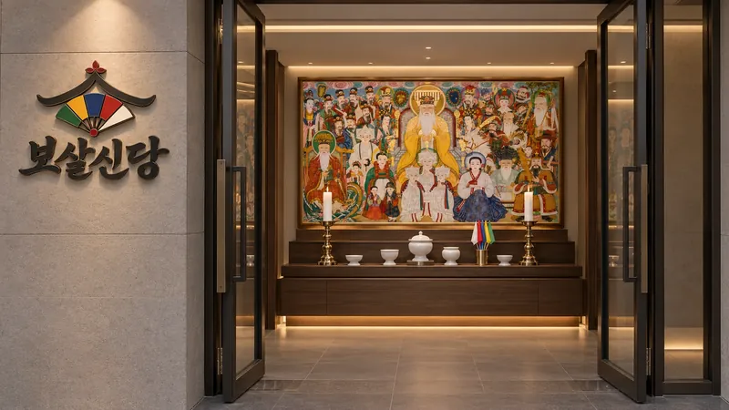
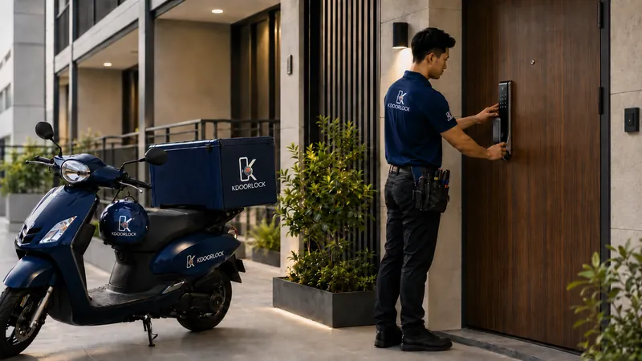
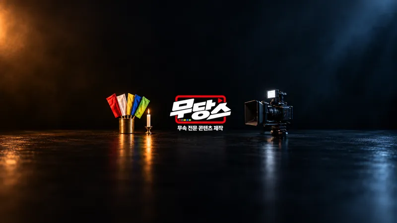

신당메이커스
신당 공간을 설계하고
시공까지 잇습니다.
- 공간과 사용 방식에 맞춰 필요한 범위를 정리합니다.
- 신단 구성과 제작, 시공 연결을 함께 검토합니다.
- 자리분석으로 동네의 인구·주변 업소·교통 정보를 살펴봅니다.
잭피오라클의 세 가지 사업
신당메이커스 · 케이도어락 · 무당스
잭피오라클이 기획하고 이어가는 세 가지 사업입니다.
필요를 세심하게, 완성을 책임 있게.

신당 공간 기획 · 신단 제작

디지털 도어락 · 설치·사후관리 연결

무속 전문 영상 콘텐츠
브랜드를 선택해 하는 일을 살펴보세요.
사업 분야
분야마다 필요한 전문성과 방식으로 접근합니다.
신당메이커스
케이도어락 · KDoorLock
무당스
회사 소개
잭피오라클은 각 브랜드의 사업을 기획하고, 필요한 전문성과 파트너를 연결합니다. 분야는 달라도 고객이 무엇을 요청하고 누구와 진행할지 알 수 있도록 사업의 흐름을 정리합니다.
제휴 문의
제작·시공 연결, 해외 설치·유통, 콘텐츠 제휴 제안을 받습니다.